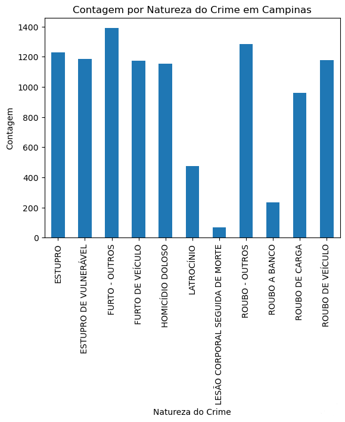

A criminalidade é uma realidade presente em diversas cidades, impactando negativamente a vida das pessoas. Assaltos, homicídios, tráfico de drogas e outros crimes causam medo, insegurança e prejuízos à sociedade. Por causa desses fatos preocupantes, é crucial entender a extensão da criminalidade em uma determinada área. Levantar dados sobre a criminalidade de uma cidade como Campinas, por exemplo, pode fornecer informações valiosas para as autoridades locais, instituições de segurança pública e comunidade em geral.
- Ao fazer essas analises podemos identificar áreas com maior incidência de determinados tipos de crimes, como furtos, roubos e tráfico de drogas. Essa análise nos permite mapear áreas prioritárias para ações de policiamento ostensivo e preventivo, focando em locais que concentram os maiores índices de criminalidade.
Com o objetivo de trazer mais transparência e auxiliar na compreensão da criminalidade em Campinas, elaboramos este gráfico que apresenta as naturezas de crimes mais frequentes na cidade durante o último ano.
O gráfico oferece um panorama geral da frequência de crimes por tipo em Campinas, auxiliando na compreensão da criminalidade local. É importante lembrar que a taxa de criminalidade e outros fatores também devem ser considerados para uma análise completa, com destaque para o papel do tráfico de drogas na dinâmica criminal
Na análise anterior, apresentamos as taxas de crimes do ano inteiro em Campinas. Agora, aprofundando a análise, vamos explorar este gráfico que apresenta a frequência de crimes por tipo de crime e por mês durante o último ano.
Em um mergulho profundo na criminalidade de Campinas, vamos além das taxas anuais e exploramos a riqueza de detalhes revelada por este gráfico. Aqui, desvendamos a frequência de crimes por tipo e por mês durante o último ano, traçando um panorama revelador da dinâmica criminal na cidade.
Março, Maio e Julho:
Furtos: Picos de furtos, com destaque para furtos de veículos.
Roubos: Aumento da incidência de roubos, incluindo roubos a banco.
Homicídios Dolosos: Elevação do número de homicídios.
Abril, Junho e Agosto:
Estupro de Vulnerável: Maior frequência de estupros contra pessoas em situação de vulnerabilidade.
Novembro e Dezembro:
Lesão Corporal Seguida de Morte: Aumento de lesões corporais com consequências fatais.
Roubos: Picos de roubos, incluindo roubos a banco.